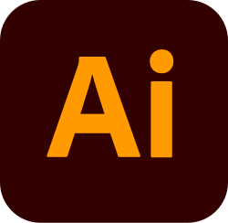
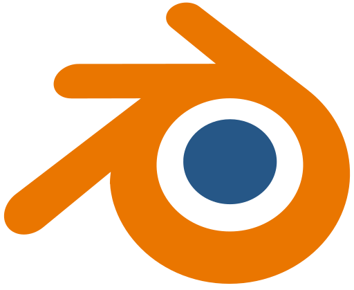

27 Años San Miguel Chapultepec, Miguel Hidalgo, CDMX
Soy un diseñador profesional orientado al trabajo en equipo y a la optimización de procesos de diseño, con la capacidad de adaptarme rápidamente a distintos entornos laborales.
Cuento con un enfoque creativo, habilidades de comunicación sólidas y un alto nivel de productividad.
Educación
üéì Licenciatura en Dise√±o UAM Cuajimalpa (2021 - Actual)
Software
AutoCAD
Photoshop

Illustrator
Sketchup

Blender
Paquetería Office
Ultimaker Cura
Habilidades
• Diseño Gráfico
• Creatividad
• Gestión de tiempo
• Comunicación efectiva
• Visualización de datos
• Capacidad de trabajar en equipo
• Logo y Branding
• Interfaces
• Editorial/Layout
• Infografías
• Diseño de Personajes
• Animación

 Sketchup
Sketchup  Ultimaker Cura
Ultimaker Cura